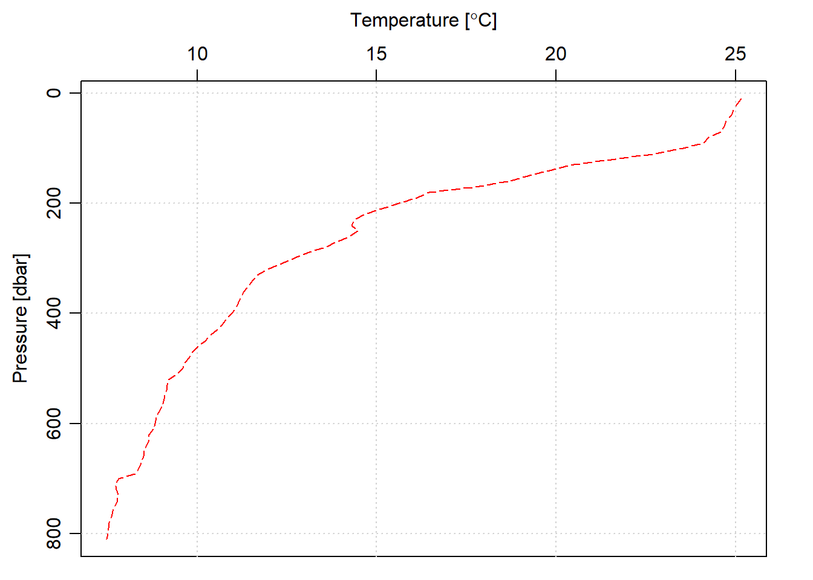

Chapter 12 Functions and packages
In R, functions are treaed as first–class objects similar to other data types like numeric, character or vector. This is the fundamental property of functional programming languages.
12.0.1 core functions
R provides functions for common tasks like plotting, statistics and numerical analysis. In practice, most of the interactions we have with R is through functions—either provided by the base system or in packages.
The syntax for calling a function in R is similar to most other programming languages. FOr instance, we use the function mean() to compute the average of a vector of numbers. This function is provided by the base package
temperature = c(28.6,28.8,29,28,27.8,27.2,26.8,25,26.2,27.2,27.5,27.8)
mean(temperature)[1] 27.49167Sometimes you might need to extend some function that are neither offered by base nor by other packages. Then you need to define your own function to perform a particular task. For instance, we need to log–transform climatological monthly sea surface height anomaly. Let’s first create ana imaginary ssh anomaly
ssh.anomaly = c(1.2,1.1,0.8,0.2,0,-0.1,-0.52,-0.4,0.12,0.58,0.89, 1.02)
log(ssh.anomaly) [1] 0.18232156 0.09531018 -0.22314355 -1.60943791 -Inf
[6] NaN NaN NaN -2.12026354 -0.54472718
[11] -0.11653382 0.01980263We notice that log() function returns NaN for negative elements and Inf for zeros. only positive elements returned with numeric values. From the results above, it is clear that log() function never works with negative and zeros. Therefore, for this kind of data like the ssh anomaly where numeric values ranges from negative to positive with some instance of zeros, another function for transofrmation is needed. Unfortunately there is none at present from R. That’s when creating your own functions matters.
12.0.2 user defined functions
R has a special syntax for defining functions. Like other programming languages, R offers a function() sysntax that allows to speficy the function name, parameters along with body of statements that executes and produce results and a return() funtion to output the result. The syntax for defining function is similar to that of creating objects, using the assignment operator either <- or = depending on your preference. For instance, We create a function and assign it a name inverse_hyperbolic, which transform data close to logged but allows for zeros and negative, which log() function returns infinity and NaN, respectively.
inverse_hyperbolic = function(x = "a numeric, a data frame or matrix"){
output = log(x + sqrt(x^2 + 1))
return(output)
}It’s not necessary to specify the return value in function. The principal is that the last item evaluated in the function is automatically considered as the return value. However, we defined the return() for inverse_hyperbolic functionw to print out the result.
Using the function we created is very simple, for instance we can tranform the ssh anaomaly with the function we just created as highlighted in the chunk below;
ssh.anomaly.transofrm = inverse_hyperbolic(ssh.anomaly)
ssh.anomaly.transofrm [1] 1.01597313 0.95034693 0.73266826 0.19869011 0.00000000
[6] -0.09983408 -0.49902844 -0.39003532 0.11971385 0.55159956
[11] 0.80141549 0.89544525The literal name of our function inverse-hyperbolic, corresponds to the function object, while the ssh.anomaly.transofrm is the result of the call returned by the input ssh.anomaly after evaluated with inverse_hypperbolic() function.
We can also create a function that repeate common task
## This function convert matrix into a data frame that is suibtable for tidyverse ecosystem.
##
matrix_tb <- function(x="supply the vector containing the the x value of the array",
y = " supply the vector containing the y value of the array",
data = "supply the the matrix from the array"){
if(!is.matrix(data)){
stop("you supplied unsupported file, only matrix format file is acceptable")
}else{
require(magrittr)
require(tidyverse)
dimension <- data.frame(x, data) %>% dim()
output <- data.frame(x, data) %>%
tidyr::gather(key = "lati", value = "value",2:dimension[2]) %>%
dplyr::mutate(y = rep(y, each = dimension[1])) %>%
dplyr::select(x,y, value) %>%
tibble::as_tibble()
return(output)
}
}12.1 packages
In R packages refers to a collection of functions bundled together. In addition to functions, an R package can also contain datasets along with the dependincies. When you start R, the base packages is loaded also by default. The base packages contain basic functions for arithmetic, importing and exporting of dataset, plotting and numerous other simple tasks.
In additon to base packages, there are thousands of packages avaialble in the CRAN covering. We can install these packages from R using the install.packages() function—which downloads the sources files for the packages from CRAN mirror websites and store the package in a local repository.
We neeed to call install.packages() once to install the package(s). Once the package is installed, we use either library() or require() to load the functions into the workspace. We use several packages in this book and load them with the require() function.
12.2 function pipelines
In recent years, efforts have been made to implement an R analogy to Unix pipelines, with a notation for chaining function calls. For example, the mean of temperature from a vector may be computed conventionally in R with
temperature = c(28.6,28.8,29,28,27.8,27.2,26.8,25,26.2,27.2,27.5,27.8)
mean(temperature)[1] 27.49167However, the modern R allows to pipe the sequence of operation with the magrittr package (Bache and Wickham 2014). The principal function provided by the magritrr package is the %>% widely known as the pipe. The %>% is a binary operator that takes the item on its left and supplies it as the first argument to the functio on its right. For example, the code for computing the mean of temperature can be written as:
require("magrittr")
temperature %>% mean()[1] 27.49167The power of %>% is clearly obvious when you desire to perform multiple functions. For instance, if we are interested to use the oce package to read CTD file, remove the upcast and retain with the downcast measured values, align it th standard depth of 10 meter interval, select measured CTD values from the 5 meters and above and then plot the profile of temperature. The chunk below is piped to illustrate the expression above
oce::read.ctd(file = "e:/Data Manipulation/ctd_algoa/dstn047.cnv") %>% ## read
oce::ctdTrim(method = "SBE") %>% ## remove the upcast
oce::ctdDecimate(p = 10) %>% ## align to standard depth
subset(pressure >=5) %>% ## pick only values from 5 meters and above
oce::plotProfile(xtype = c("temperature"), lty = 5, col = "red") ## plot
Integrating %>% operator makes for more efficient and legible code in R. It’s an efficient in that it does’nt save unnecessary intermediate objects. Its legible in that you can read the code as we read normal words in the sentence because he %>% is referred to then. The code above can be read as: first read the ctd file with oce::read.ctd(), then remove the upcast measurements with oce::ctdTrim(), then align the pressure to standard depth of 10 meter interval with oce::ctdDecimate(), then select only the value from 5 meters and above and finally plot the profile of temperature with oce::plotProfile().
Piping with R becomes ob and readable when is indented with line breaks, for instance
ssh.anomaly = c(1.2,1.1,0.8,0.2,0,-0.1,-0.52,-0.4,0.12,0.58,0.89, 1.02)
ssh.anomaly %>%
inverse_hyperbolic() %>%
lead() [1] 0.95034693 0.73266826 0.19869011 0.00000000 -0.09983408
[6] -0.49902844 -0.39003532 0.11971385 0.55159956 0.80141549
[11] 0.89544525 NASome functions have arguments that need vector data. When you use the pipe %>% operator for such functions in a data frame, you get an error
stn.tb %>%
cor(x = pressure, y = temperature)You notice that, the cor() function only requires x and y arguments. When you pipe a dataset with variables in data frame with the cor(), you get an error because the cor() does not know how to handle the data frame as argument with the %>% operator. However, with the %$% treat the data frame as individual vectors and hence accepted with the %$% operator.
as:
stn.tb %$%
cor(x = pressure, y = temperature)[1] -0.9137736you can also combine the %>% and %$% operators in the chunk code to perform a particular task. For example, we are interested with the association of fluorescence with increasing pressure, but the pressure is restricted to the upper 200 meter deep. The code for this can be written as:
stn.tb %>%
filter(pressure <=200) %$%
cor(x = pressure, y = fluorescence)[1] -0.8925602References
Bache, Stefan Milton, and Hadley Wickham. 2014. Magrittr: A Forward-Pipe Operator for R. https://CRAN.R-project.org/package=magrittr.